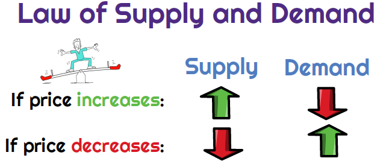
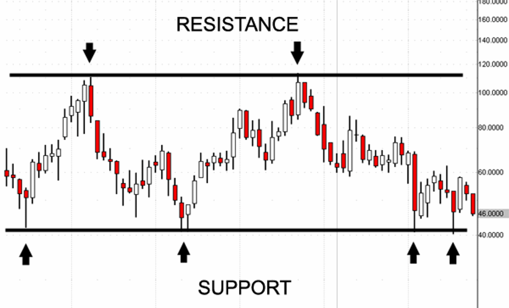

What is the law of supply and demand?

The law of supply and demand combines two economic principles that describes how the price of a product can effect its supply and demand.
As price rises the supply increases while demand is declining, and while the price is declining, the supply for it is also declining while
demand is increasing.
Other words that are often used for suppply and demand are support and resistance. In the trading world these two words are the same exact things
as supply and demand. Support is the same as demand becasue when price gets to support levels the buyers will want to buy at discounted levels. Supply
and resistance are the same because when price gets to resistance we want to look for price to fall from these levels.

What Is Support And How to Trade It?
In a downtrend, we will see price pushing down agressively because there is an excess of supply and low demand.
When the price is falling closer to these demand prices it becomes more attractive to buyers for them to take action.
At a certain price, the amount of buyers will start to match the amount of sellers and the price will start to equal out. Than eventually
the amount of buyers will start to become more than sellers, and price will start to rise. When it does come down to this demand level you also want
to see bullish candlesticks at these prices to giver you confrimation the buyers are in control.
What Is Resistance And How to Trade It?
Resistance will be the opposite of support. The price will rise because the demand is high while the supply for it is low. After the buyers have pushed
the price to a certain level we will start to see the sellers start to take over the buyers. This happens because the buyers are no longer wanting to
buy at such high prices, so sellers take profit at these high prices. Like Supply When price gets to these levels we will look for bearish candlesticks.